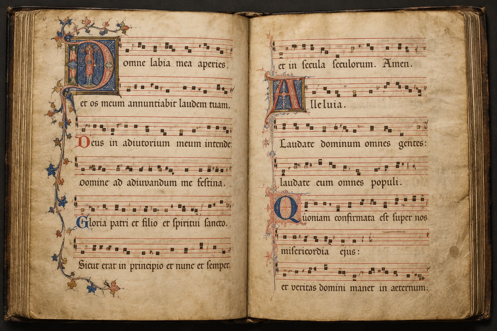

Синтетический исследовательский демо-каталог · 15 источников / 40 произведений

DEMO-MS-001 · c. 1280–1300 (условная датировка) · IIIF Manifest · лист 1r
Иллюстрация сгенерирована ИИ, не архивное изображение.
Скачать MEI · Реконструкция · Варианты
Синтетическое аудио — последовательность нот Cantus, не исполнение многоголосного произведения.
Открыть статью · Такты → IIIF canvas · DIAMM metadata